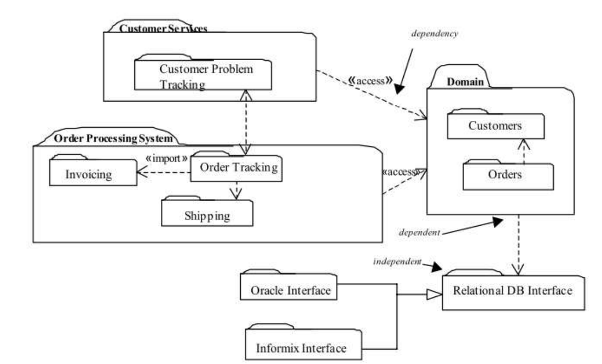
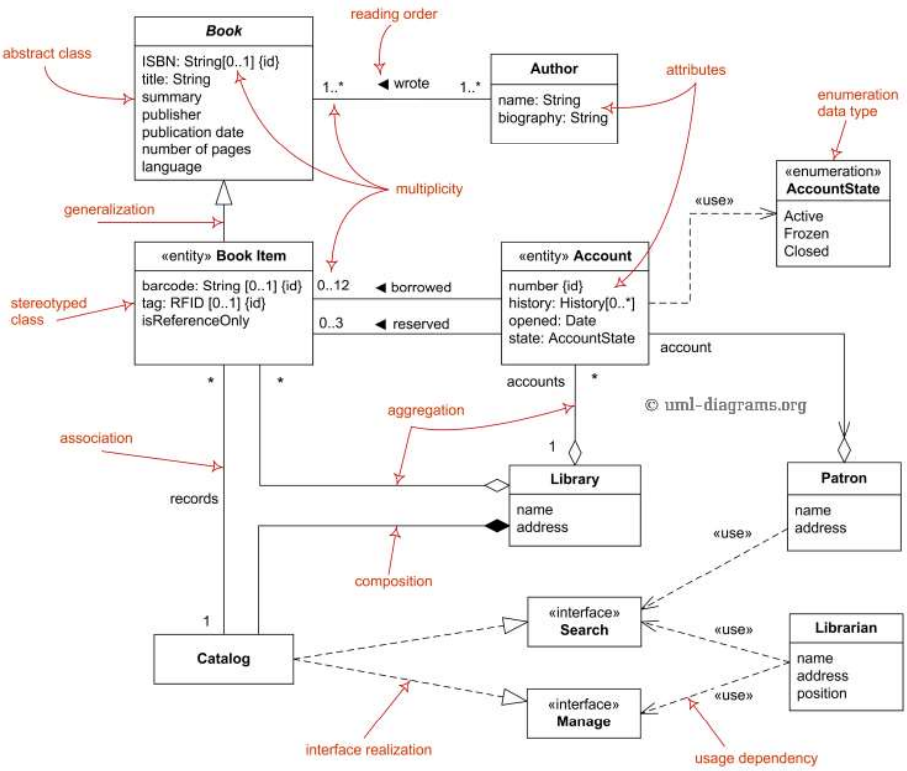
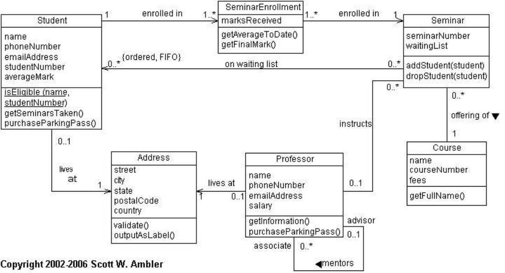
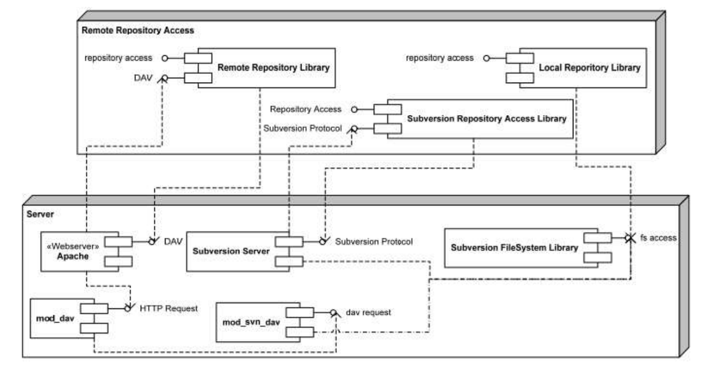
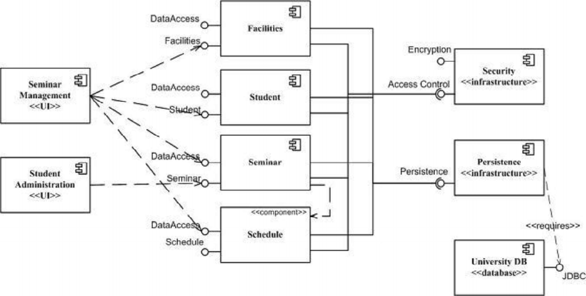

Every topic exists because the one before it left a gap. Read it as problem, solution, new problem, and the facts hang together.
Big picture: read this first
One question runs through all six topics: how do we describe a software system so that builders, managers and customers can reason about it before and while it is built? Topic 1 says an architecture is a set of structures. Topic 2 says why it matters and why you need several views. Topic 3 names the styles designers reuse. Topics 4 and 5 then spell out the module styles (the code), and Topic 6 the running system (C&C) and where it lives (allocation).
The chain: each topic fixes a gap the last one left
Topic 1What is architecture?Structures, abstraction, views, module / C&C / allocationBut why bother, and one picture is not enough …
Topic 2Why it matters, how to document itQuality attributes, documentation, 4+1 viewsBut designers keep meeting the same problems …
Topic 3Architectural stylesNine general styles: client-server, EDA, layered, SOA, microservice …But a name is not a design; each style needs detail …
Topic 4Module views and four stylesDecomposition, uses, generalization, layeredBut two module styles are still missing …
Topic 5Aspects and data modelCrosscutting concerns, data entitiesBut all module views are static; what happens at runtime? …
Topic 6Runtime and allocation stylesC&C: call-return, data flow, event-based, repository. Allocation: deployment, install, work assignmentThe slides stop here: choosing a style is not covered.
How Topic 1 connects to Topic 6
Topic 1 lists three kinds of structure and the questions each answers. Topics 4 to 6 are those three kinds again, one by one: module structures become the six module styles (Topics 4 and 5), C&C structures become the C&C styles and allocation structures become the three allocation styles (both Topic 6). Topic 3 is the bridge, because it shows the same styles in short form and tags some of them module (layered) and some C&C (data-centered, SOA).
Topic 1 raised …
Answered in …
Module structures and their questions
Topics 4 and 5 (six module styles).
C&C structures and their questions
Topic 6 (four categories, five styles).
Allocation structures
Topic 6 (deployment, install, work assignment).
Structure vs view, and several views
Topic 2 (4+1 views).
Quality attributes
Topic 2 (what each needs). Topics 4 to 6 (each style says what it is for).
Four threads that run through all six topics
These links are my own summary of the slides, to show how the topics connect. They are not slide text.
Thread
Topic 1
Topic 2
Topic 3
Topic 4
Topic 5
Topic 6
Structure vs view
Defined
4+1 views
Styles are patterns of structure
Module views
Module views (aspects, data)
C&C and allocation views
Quality attributes
Architecture enables or inhibits them
Performance, modifiability, security, scalability
Benefits listed per style
Modifiability and portability
Modifiability
Performance, security, availability
Audience
Stakeholders
Education, communication, analysis
Designer
New developers, planners
Developers, data designers
Testers, operators, managers
Layered and SOA
–
–
Layered and SOA introduced
Layered as a module style
–
SOA as a C&C style
If you remember only six sentences
Topic 1: software architecture is a set of structures, an abstraction that shows public details, and there are three kinds: module, component-and-connector and allocation.
Topic 2: architecture decides quality attributes, so document it, and use several views such as the 4+1 model because one picture suits no one.
Topic 3: architectural styles are reusable shapes made of components, connectors and constraints, from client-server to layered, SOA and pipe-and-filter.
Topic 4: module views show the static code through is-part-of, depends-on and is-a, in four styles: decomposition, uses, generalization and layered.
Topic 5: the last two module styles are aspects, for crosscutting concerns, and the data model, for data entities.
Topic 6: C&C styles show runtime behaviour in four categories, and allocation styles map software to hardware, files and teams.
Previously on CSE341
Tap a card to jump to that topic. Read the "But then" line, then the next card’s "Problem": they are the same sentence.
Structures, views and the three categories of structure.
Problem
Software is too big to reason about from the code alone, and different people need different pictures.
→
Solution
See architecture as an abstraction made of structures (module, C&C, allocation). Architects design structures and document views of them.
→
New problem
Why is this worth doing? And one picture still will not suit every reader.
Mind map
Swipe sideways to see the whole map
The big idea
The slides open with one sentence: studying software architecture is studying how software systems are designed and built. Software architecture is the foundational element of software design. It means understanding and organising a system, its components, how they interact, the environment they run in, and the core principles used to design the software.
The building analogy (from the slides)
Step
Building a house
Building software
1
Requirements for the building are collected
Requirements are specified
2
A design is created to satisfy them
A high-level design is created
3
The design is refined into elaborate blueprints
Detailed algorithms are developed from that design
4
Construction follows the blueprints
Code is written to implement the algorithms
5
The building is occupied and used
The system is deployed, used and maintained
What is architecture? Four ideas
1. A set of structures
A structure is a set of elements held together by a relation. Software systems are made of many structures.
2. An abstraction
It selects some details and hides others. Elements talk through interfaces, which split an element into public and private details. Architecture is about the public side only.
3. Every system has one
Any system can be shown to have elements and relations among them, which is enough to reason about it.
4. Not all are good
The definition does not care whether the architecture is a good one or a bad one.
What architecture is used for
Helps stakeholders see, understand and analyse a system’s qualities
Focuses on structure, not implementation
Anticipates expensive choices before they are made
Basis for core decisions and high-quality work
Structures and views
Structure
The set of elements itself, as it exists in software or hardware.
View
A representation of a coherent set of architectural elements and the relations among them, written by and read by stakeholders. In short: a view is a representation of a structure.
The slides put it this way: architects design structures, and document views of those structures. They also use a body analogy: a skeleton picture, a blood-vessel picture and an X-ray are three different views of one body. They look different and have different properties, yet they are all related and together describe the body. So to talk about an architecture you must say which structure and view you mean.
The three categories of structure
Category
Elements and relations
Questions it answers (from the slides)
Module
Implementation units (modules) with assigned responsibilities. Relations: is part of, depends on, is a. Layers are an aggregation of modules. Example notation: UML package and class diagrams.
What is each module responsible for? What may it use, and what does it actually use? Which modules are related by inheritance?
Component-and-connector (C&C)
Components: encapsulated, replaceable parts with runtime behaviour. Connectors: pathways of interaction between them. Components have ports; ports have interfaces; ports attach to connector roles.
What are the major executing components and how do they interact? Which data stores are shared? Which parts are replicated, or can run in parallel? How does data flow through the system? Can the structure change while running?
Allocation
Mappings from software structures to non-software ones: deployment (software to hardware), implementation (modules to files in development, test and build environments), work assignment (modules to teams).
Which processor does each element run on? Where is each element stored during development, testing and building? Which team builds it?
The deck also shows the web as an example: one view is a collection of linked documents seen through a browser (HTTP, URI, MIME and HTML are the standards), another is a set of computers joined by the Internet as clients and servers. Same system, different views. The slides finish with a figure of the architecture design activity and a case study (a CS One-Stop Portal) that are pictures only, so they are not reproduced here.
Terms to know
Software architecture
The foundational element of software design: understanding and organising a system, its components, their interactions, the environment, and the principles used to design it.
Structure
A set of elements held together by a relation; the elements as they exist in software or hardware.
View
A representation of a coherent set of architectural elements and their relations, written and read by stakeholders. A representation of a structure.
Abstraction
Selecting certain details and suppressing others. Architecture keeps the public side of an element and leaves its private details out.
Interface
What an element shows to others. It partitions an element into public and private details.
Module structure
Software split into implementation units (modules), each with specific responsibilities. Static.
Component-and-connector structure
Elements with runtime behaviour (components) and their interactions (connectors).
Allocation structure
Relations between software elements and non-software elements such as CPUs, file systems, networks and development teams.
Component
An encapsulated, replaceable system element with runtime behaviour.
Connector
A pathway of interaction between components.
Deployment / implementation / work assignment structure
Software to hardware; modules to files in development, test and build environments; modules to the teams who build them.
Boss fight
Tap a question to reveal the model answer. Try it in your head first.
1Give the slide definition of architecture in your own words using the four ideas.
It is a set of software structures (elements held together by relations).
It is an abstraction: some details are chosen, others hidden. Only the public side of an element’s interface is architectural.
Every system has an architecture.
An architecture can be good or bad; the definition does not judge.
2What is the difference between a structure and a view? Who does what with each?
A structure is the set of elements as they exist in the software or hardware. A view is a representation of a structure, written for stakeholders to read. Architects design structures and document views of them.
3Name the three categories of structure and say what each one is mainly used to reason about.
Module: static code units. The slides call them the primary tool for reasoning about modifiability.
Component-and-connector: runtime behaviour. Used for runtime properties such as performance, security and availability.
4Why does the slide deck show a skeleton, a blood-vessel picture and an X-ray?
They are three different views of one body. They are drawn differently and have different properties, yet they are all connected and together describe the body. Software is the same: no single diagram shows everything, so you must say which structure and view you are using.
5Which questions do module, C&C and allocation structures each answer? Give one for each.
Module: what other modules is this module allowed to use?
C&C: which parts of the system can run in parallel?
Allocation: which team is each software element assigned to (or which processor does it run on)?
Other questions are on the list above; any one per category is fine.
Topic 2
Why it matters, and how to document it
Quality attributes, documentation and the 4+1 view model.
Problem
Quality depends on the architecture, and stakeholders need to understand it.
→
Solution
Document it for education, communication and analysis, with several views, for example the 4+1 model.
→
New problem
Designers keep hitting the same problems. Are there proven shapes to reuse?
Mind map
Swipe sideways to see the whole map
Why architecture matters
The slides give seven reasons. Together they say that the architecture decides whether the system will be good, and that it is the one thing everyone can talk about early.
Reason about and manage change as the system evolves.
Predict qualities early, before the system exists.
Communicate: a documented architecture helps stakeholders talk to each other.
Constrain the choices made later in implementation.
Assemble: architecture-based development focuses on putting components together, not only creating them.
Cost and schedule: the architect and project manager can reason about both.
Reuse: it can be a transferable, reusable model at the heart of a product line.
Good software and quality attributes
Good software delivers the required functionality and quality. Architecture is largely about achieving quality attributes, and a system’s quality attributes are substantially determined by its architecture. So the architect has to document enough that the architecture can be analysed to see whether the system built from it will have the qualities needed.
Attribute
What the architecture should do (from the slides)
Performance
Focus on time-based behaviour of elements, shared resources, and the frequency and volume of communication between elements.
Modifiability
Limit interactions (coupling) so that each change affects only a small number of elements, ideally one.
Security
Build authorization into the architecture to guard against intrusion; design safeguards and a recovery mechanism.
Scalability
Avoid hard-coding resource assumptions or limits.
Why document the architecture?
Documentation is the creation of an artifact: a document, which may be electronic files, web pages, a whiteboard snapshot or paper. So documenting an architecture is a concrete task: producing a software architecture document. The slides add a joke by Steuart Henderson Britt: an undocumented architecture is a wink in the dark, you know what you are doing but nobody else does.
1. Education
Introduce people to the system: new team members, outside analysts, a new architect, or a first-time customer who must approve funding.
2. Communication
The main way different stakeholders talk. It gives a rough way to gauge progress and the work left, and a framework for attacking the design systematically.
3. Analysis and construction
It tells implementers what to build, and must hold the information needed to evaluate quality attributes.
Which views, and which notations?
Documenting an architecture is a matter of documenting the relevant views, then adding documentation that applies to more than one view. The slides pose two questions: which views are useful, and which notations should describe them. Their answer: one representation will not satisfy all stakeholders, and what suits depends on how complex the diagram is, so the architect develops multiple views.
The 4+1 view model
Philippe Kruchten of IBM (1995) proposed four fundamental views linked by use cases or scenarios. His aim was to make sure architects consider and document all the important aspects of software-intensive systems. Hofmeister, Nord and Soni (2000) suggest similar views and add a conceptual view.
View
Shows
UML diagrams the slides list
Logical
The vocabulary of the problem domain as classes and objects.
Class, object, state, sequence, communication.
Process
How the system is made of interacting processes at runtime; concurrency and synchronization.
Control flow charts, data flow charts.
Development
The code base as components or modules: libraries, packages, subsystems.
Component and package diagrams.
Physical
The hardware and how software components are spread across processors.
Deployment diagrams.
Use case (+1)
The system’s functionality. It ties the other four together and helps explain them.
Use case diagrams.
The slides’ own summary of views: different views address different concerns, not all views are needed, and keeping several views in step costs effort, especially as the system evolves.
Terms to know
Quality attribute
A required quality of the system such as performance, modifiability, security or scalability. Largely determined by the architecture.
Coupling
Interaction between elements. The slides say limit it so that a change affects few elements.
Stakeholder
Anyone with a role that needs the architecture: for example team members, analysts, customers, project managers. The slides show a figure of the roles without a list.
Architecture document
The concrete artifact produced by documenting: files, web pages, a whiteboard snapshot or paper.
Product line
A family of products built on a shared, reusable architecture model.
4+1 view model
Kruchten (IBM, 1995): logical, process, development and physical views, tied together by use cases (the +1).
Logical view
Problem-domain vocabulary as classes and objects.
Process view
Interacting runtime processes; concurrency and synchronization.
Hardware and how software is spread across processors.
Use case view
The requirements as use cases; ties the other four views together.
Conceptual view
A view added by Hofmeister, Nord and Soni (2000). The slides name it but do not describe it.
Boss fight
Tap a question to reveal the model answer. Try it in your head first.
1Give four reasons architecture is important.
Any four of: it lets you reason about and manage change; it enables early prediction of qualities; a documented architecture improves communication among stakeholders; it constrains later implementation; it focuses on assembling components; it supports reasoning about cost and schedule; it can be a reusable model for a product line.
2Match each quality attribute to what the architecture should do: performance, modifiability, security, scalability.
Performance: manage time-based behaviour, shared resources and how often and how much elements communicate.
Modifiability: limit coupling so a change touches few elements.
Security: include authorization, safeguards and recovery.
Scalability: do not hard-code resource assumptions or limits.
3What are the three uses of architecture documentation?
(1) Education: introduce people to the system. (2) Communication among stakeholders, plus a way to gauge progress. (3) Basis for analysis and construction: it tells implementers what to build and holds the information needed to evaluate quality attributes.
4Name the five views of the 4+1 model and say what the +1 is for.
Logical, process, development and physical, plus the use case view. The use case view is the +1: it ties the other four together and helps define and explain the structures and functions in them.
5Why not just draw one big diagram of the architecture?
The slides say one representation will not satisfy all stakeholders, and the right one depends on the complexity of the diagram. So the architect develops multiple views. The cost is the effort of keeping them all up to date as the system evolves, which is why not every view is needed.
6Which view would you open to answer each: “Which servers run this?” “What classes model a customer?” “What runs at the same time?”
Physical (hardware and where software sits), logical (classes and objects), process (interacting processes, concurrency). This mapping is my own application of the slide table; the slides do not set these questions.
Topic 3
Architectural styles
Nine general styles, with client-server, EDA and layered looked at more closely.
Problem
Some design choices keep producing better systems; naming them saves time.
→
Solution
A style = components, connectors, constraints and semantic models. Nine styles from client-server to pipe-and-filter.
→
New problem
One line per style cannot document a real system. We need elements, relations and constraints, starting with the code.
Mind map
Swipe sideways to see the whole map
What is an architectural style?
Engineers building many systems in many domains noticed that certain design choices keep producing solutions with better properties. An architectural style is a specialization of element and relation types, together with a set of constraints on how they can be used. Each style describes a category of system with four parts:
Components
The parts that do a job the system needs, for example a database or a computational module.
Connectors
What lets components communicate, coordinate and cooperate.
Constraints
Rules for how components may be joined into a system.
Semantic models
Let a designer understand the overall properties of the system.
The nine styles in this lecture
Style
Idea (from the slides)
Benefits or example named
1. Client-server
Two main components: the client (usually the user interface) and the server (back-end services), communicating. 2-tier, 3-tier, n-tier and cloud computing show this style.
Scalability, separation of concerns, flexibility in client types. Web apps, networked games, banking.
2. Peer-to-peer
Every node has the same capabilities and responsibilities, and nodes talk to each other directly.
A data store is accessed often by components that update, add, delete or change its data.
Integrability: components can change and new clients be added without affecting other clients.
4. Event-driven (EDA)
Built around events, meaning occurrences or changes of state. Components talk mostly through events, not request-response, which decouples them.
Real-time flow between applications, microservices and devices. E-commerce, IoT, finance, logistics, social media, healthcare.
5. Layered (module type)
Logical layers such as presentation, business logic and data access, each with one responsibility.
Separation of concerns, modularity, maintainability. Common in web apps.
6. Service oriented (SOA) (C&C type)
A set of independent services, each for one task (orders, inventory, payments), that talk over a common platform and work together. Each can be updated without affecting the others.
Reuse services in different systems or combine them for complex tasks; flexible and scalable.
7. Microservice
Splits a big app into independent services that talk through APIs: loosely coupled, highly maintainable and testable, independently deployable, organised around business capabilities.
The slides contrast it with the layered pattern and SOA in a figure only (no text).
8. Data flow
Input data is transformed through a series of components into output data. Pipe-and-filter: filters connected by pipes that carry data to the next component.
9. Main program / subprogram
A classic structure that breaks function into a control hierarchy: a main program calls components, which may call other components.
Client-server versus peer-to-peer
Redrawn. The slides compare the two in a picture and say P2P computers are dedicated to serving each other, so they can communicate directly.
Event-driven architecture: four parts
Part
Role
Event
A meaningful change or occurrence, often a time-stamped piece of data saying what happened.
Event producer
Generates and sends events: a user interface, a sensor or any source that starts one.
Event consumer
Listens for events and reacts: a service, a function or any module built to respond.
Event broker
The go-between that routes events from producers to consumers. The slides name Apache Kafka, RabbitMQ and AWS Lambda as ways to build it.
Layered example: an ERP system
Redrawn from the slide text. The slides say the ERP covers accounts, stock, HR, production, purchasing, finance and more, and give each layer its own job as shown above. The business-rules example in the slides: when a new employee is entered in HR and payroll, add an introductory course to that employee’s training menu.
Three tags to remember: the slides label data-centered and SOA as C&C styles and the layered pattern as a module style. That is the first hint that the next two topics split styles by structure category.
Terms to know
Architectural style
A specialization of element and relation types plus constraints on how they can be used. Describes a category of system.
Client-server
Client (usually the user interface) and server (back-end services) communicate. 2-tier, 3-tier, n-tier and cloud follow it.
Peer-to-peer (P2P)
Every node has the same capabilities and responsibilities; nodes talk directly.
Data-centered architecture
A shared data store is used by components that update, add, delete or modify the data. Promotes integrability.
Integrability
Existing components can change and new clients be added without affecting other clients.
Event-driven architecture (EDA)
Design around events; components are decoupled and talk mainly through events instead of request-response.
Event / producer / consumer / broker
The change that happened; the source that emits it; the part that reacts; the intermediary that routes events.
Layered pattern
Logical layers each with one responsibility, for example presentation, business logic, data access.
Service oriented architecture (SOA)
Independent services for specific tasks, joined over a common platform; reusable and updatable one at a time.
Microservice architecture
An app split into independent services that talk by API; loosely coupled, independently deployable, organised around business capabilities.
API
Named in the slides as the way microservices interact. The slides do not define it.
Pipe-and-filter
Filters (components) joined by pipes that move data from one filter to the next.
Main program / subprogram
A control hierarchy where a main program calls components, which may call others.
Boss fight
Tap a question to reveal the model answer. Try it in your head first.
1What does an architectural style contain?
Components that perform needed functions, connectors for communication, coordination and cooperation, constraints on how components may be integrated, and semantic models that help a designer see the system’s overall properties.
2Compare client-server and peer-to-peer in one short paragraph.
In client-server, the system is split into a client (usually the user interface) and a server (back-end services); the benefits listed are scalability, separation of concerns and flexible client types. In peer-to-peer, every node has the same capabilities and responsibilities and nodes communicate directly; the benefits listed are decentralization, fault tolerance and distributed processing.
3List the four key components of event-driven architecture and what each does.
Event: a meaningful, often time-stamped change.
Event producer: generates and emits events.
Event consumer: listens and reacts.
Event broker: routes events from producers to consumers.
4Why is EDA described as decoupled?
Components talk mainly through events, not by direct request-response, so a producer does not need to know which consumers exist. The slides say EDA decouples the components of a system.
5Name the five layers of the ERP example and what the business-rules layer does.
User interaction, functionality, business rules, application core, database. The business rules layer sets how the ERP modules behave, for example adding an introductory course to the training menu when a new employee is entered in HR and payroll.
6What is the difference between SOA and microservices? What do the slides actually say?
The slides describe SOA as independent services for specific tasks, communicating over a common platform and updatable independently. They describe microservices as breaking a large app into independent services that interact by API: loosely coupled, easy to maintain and test, independently deployable, organised around business capabilities.
My own reading: the two descriptions overlap heavily. The slide that compares layered, SOA and microservice is a figure only, so the files give no explicit list of differences.
Topic 4
Module views and four styles
What a module view is, then decomposition, uses, generalization and layered.
Problem
We need a static picture of the code: what belongs where, who may use whom.
→
Solution
Module views with is-part-of, depends-on and is-a, and the first four styles: decomposition, uses, generalization, layered.
→
New problem
Two styles are still missing: code that crosscuts modules, and the data the system stores.
Mind map
Swipe sideways to see the whole map
What a module view is
Every module view has four parts, which the slides repeat for each style: elements, relations, constraints and what it is for. A module is an implementation unit of software that provides a coherent set of responsibilities. A responsibility is a general statement of what an architecture element is expected to contribute. Each module can also carry properties: responsibilities, visibility information (which other modules can use it), revision history.
Is-part-of
Part/whole between a submodule and the aggregate module. In its most general form it just means aggregation.
Depends-on
A depends on B. A logical association between classes in a UML class diagram also shows a dependency.
Is-a
Generalization/specialization between a specific child module and a general parent. Inheritance is a special case.
Constraints may limit visibility between modules. Uses of module views, from the slides: a blueprint for the code, impact analysis, explaining the system and the code base, requirements traceability, planning incremental development, and work assignments, schedules and budgets.
The limit: a module view is a static partition of functions, so it is hard to infer runtime behaviour from it. It is not used to analyse performance or reliability. Module views are therefore mapped to C&C views, and one module may take part in many runtime components. The slides add that it is unlikely any architecture documentation is complete without at least one module view.
Notations: informal boxes; UML (packages, classes and more); and a dependency structure matrix, a square matrix showing dependency between modules.
The six module styles at a glance
This lecture covers the first four. Aspects and data model come in the next lecture (Topic 5).
Style
Relation
Key constraints
What it is for
Decomposition
Is-part-of (decomposition relation); say what criteria you used.
No loops in the decomposition graph. A module has only one parent.
Reason about and communicate structure; input for work assignment; localize changes.
Uses
Uses (a form of depends-on): A uses B if A needs a correctly working B.
No topological constraints, but loops, broad fan-out or long chains hurt incremental delivery.
Plan increments and subsets; debug and test; gauge effect of change.
Describe data structure; analyse impact of data changes; avoid redundancy and inconsistency.
Decomposition
Modules are drawn as named boxes containing other named boxes, or as nested UML packages. A subsystem is an aggregated module that does a functionally cohesive part of the mission, can run independently and can be developed or deployed in increments. The slide example is a Mars exploration robot: navigation, motion, power management, communication and monitoring are subsystems, but a utility library is a module group, not a subsystem, because it cannot do work that is recognisably part of the system’s purpose on its own.
My own answer to the slide exercise (the slides give none). The five modules come from the exercise text. The submodules shown are only those the text hints at (a course list and course details; videos, documents and slides). Other splits are possible.
Uses and Generalization
The uses view is drawn as a dependency with the stereotype <<use>> in UML packages, or as a dependency matrix. The slides’ example is ATIA-M, a large web-based Java EE app for U.S. Army training with C# desktop clients: its uses view helps plan incremental development. Generalization sits at the heart of UML: modules are shown as classes or interfaces, and a module may be marked abstract if it has no complete implementation. The example is a PetStore app. The generalization exercise on the slides is a picture only.
Layered style
A layering is more than a partition: layers follow a strict ordering relation. Five ways to draw it, per the slides:
Notation
Meaning
Stack
Boxes stacked; allowed-to-use is read top-down by adjacency. Arrows can also be used.
Segmented layers
A layer is split into segments (a finer grouping). Often an ambiguity: state whether segments may use each other (in the slide example the top layer’s segments may not, the bottom layer’s may).
Rings
Concentric circles, innermost = lowest layer. Sectors of a ring = segments. No difference in meaning from a stack, except a ring can show adjacency that a stack cannot.
Sidecar
A box beside the layers, often a utility library or platform service. You must say which usage rules apply.
Size and colour
Colour may mark the responsible team; size the relative amount of code. Explain them in a key.
The UNIX System V layer structure is the slide example, shown as a figure only.
Terms to know
Module
An implementation unit of software that provides a coherent set of responsibilities.
Responsibility
A general statement of what an architecture element is expected to contribute.
Is-part-of / depends-on / is-a
The three module relations: aggregation, dependency, generalization (inheritance is a special case).
Dependency structure matrix
A square matrix showing dependency between modules.
Subsystem
An aggregated module that does a functionally cohesive part of the mission, can run independently and be developed or deployed incrementally.
Uses relation
A uses B if A depends on the presence of a correctly working B to meet its own requirements.
Fan-out
Used in the slides when saying that broad fan-out in uses relations hurts incremental delivery. Not defined there; plainly, one module using many others.
Generalization
The is-a relation with a parent and child; supports extension, evolution and reuse.
Abstract module
A module marked as not containing a complete implementation.
Layer
A grouping of modules that offers a cohesive set of services through a public interface.
Allowed-to-use
The one-way relation between layers; a lower layer cannot use one above.
Sidecar
A box beside a layer diagram, often a utility library or platform service.
Boss fight
Tap a question to reveal the model answer. Try it in your head first.
1List the parts every module-style description has, and the three module relations.
Elements, relations, constraints and what it is for. The relations are is-part-of, depends-on and is-a.
2Why can a module view not tell you about performance? What do you do about it?
It is a static partition of the software’s functions, so runtime behaviour cannot be inferred from it. Map the module view to a component-and-connector view. A module may take part in many runtime components.
3State the two constraints of the decomposition style and what the style is used for.
No loops in the decomposition graph, and a module can have only one parent. It is used to reason about and communicate structure, to give input for work assignment, and to reason about localizing changes.
4Uses style: what makes an architecture hard to deliver in increments?
The style has no topological constraints, but the slides say loops, broad fan-out or long dependency chains impair delivery in incremental subsets.
5Give the three constraints of the layered style and one reason a lower layer cannot use a higher one.
Every piece of software is in exactly one layer; there are at least two layers; allowed-to-use must not be circular.
My own reading of the reason: if a lower layer could use a higher one, the layers would form a loop, which is the circular use the rule forbids. The slides state the rule, not the reason.
6Segmented layers: what ambiguity do the slides warn about?
Whether segments of a layer may use each other. In the slide example the top layer’s segments may not, but the bottom layer’s may, so you have to state the usage rules for segments consistently.
7Exercise: draw a decomposition view for the e-learning system.
Draw the system with five nested modules: course management, lesson delivery, quiz, user management, progress tracking. Then split modules further. My own sketch is in the diagram above (course list and details; videos, documents and slides). The slides set the exercise but give no model answer.
Topic 5
Aspects and data model
The last two module styles: crosscutting concerns and data entities.
Problem
Logging, security and transactions are needed in many modules, and the stored data needs a model.
→
Solution
The aspects style moves crosscutting code into aspect modules; the data model style shows data entities and how they relate.
→
New problem
All six module styles are static, so none shows the system running.
Mind map
Swipe sideways to see the whole map
Aspects style
In practice business code (open an account, deposit, withdraw) gets mixed with code for crosscutting concerns such as access control, transaction management and logging. The aspects style puts that code in separate aspect modules and binds each aspect to the modules that need it. The term comes from aspect-oriented programming (AOP), which complements OOP by factoring the crosscutting code out of the classes. Aspects are shown in UML as stereotyped classes. The slide example, IkeWiki, uses aspects for transaction management, exception handling and authorization checks.
Data model style
Elements are data entities, with a name, attributes, a primary key and access rules. The slide notations are the Crow’s Foot ERD, with special symbols at the line ends showing cardinality, and a UML class diagram where classes stand for entities. The example is a PetShop web store that keeps a catalogue and takes orders: most of its functions retrieve, create or update the data shown in the model.
Terms to know
Crosscutting concern
Logic needed in many modules, such as access control, transaction management and logging.
Aspect / AOP
A module that holds a crosscutting concern. Aspect-oriented programming factors this code out of classes.
Data entity
An object that holds information to be stored or represented, with attributes and a primary key.
Crow’s Foot ERD
Entity-relationship notation with symbols at line ends for cardinality.
Boss fight
Tap a question to reveal the model answer. Try it in your head first.
1What problem does the aspects style solve? Use the bank example.
An Account module should hold only account logic (open, close, deposit, withdraw), but in practice access control, transaction management and logging get mixed in. Aspects move that crosscutting code into separate modules and bind them to Account, Customer, ATM and others.
2Name the elements, notations and example of the data model style.
Elements are data entities, each with a name, attributes, a primary key and access rules. Notations: the Crow’s Foot ERD (symbols at the line ends show cardinality) or a UML class diagram. Relations: one-to-one, one-to-many, many-to-many, generalization and aggregation. The slide example is a PetShop web store whose functions mostly retrieve, create or update the modelled data.
3Which constraint of the aspects style can cause trouble, and which one of the data model style should you follow?
An aspect may crosscut regular modules and other aspects, but one that crosscuts itself can recurse forever. For the data model style the slides say to avoid functional dependencies.
Topic 6
Runtime and allocation styles
Component-and-connector styles, then the three allocation styles.
Problem
We need to reason about running behaviour, and about where software lives and who builds it.
→
Solution
C&C styles in four categories (call-return, data flow, event-based, repository) and three allocation styles (deployment, install, work assignment).
→
New problem
The slides stop here. How to choose among the styles for a given system is not covered in the files.
Mind map
Swipe sideways to see the whole map
Component-and-connector (C&C) views
A C&C view shows the system while it runs. A component is a unit of behaviour; its description says what it can do and what it needs to do it (processes, objects, clients, servers, data stores). A connector is a mechanism that relates components, for example data flow, control flow, a communication link and protocol, or shared storage. There is only one relation in a C&C view: attachment. It ties a component’s port to a connector’s role and so lays out the computational topology.
Every element should have a name and a quality-attribute type so it can be analysed. Which properties you record depends on the analysis: for performance you would note things like reliability, performance, resource needs, functionality and security. The view is used for qualitative and quantitative analysis, and together with its supporting documents it communicates the architect’s design intent. It answers the runtime questions from Topic 1: which components run, which data stores are shared, what is replicated, how data flows, what runs in parallel, whether structure changes as it executes.
Four categories of C&C style
Category
How components interact
Styles named
Call-return
By synchronous calls. A component gets control and data, does its work, then returns control to the caller.
Client-server, peer-to-peer, SOA
Data flow
Driven by data moving through the system; each step transforms inputs into outputs.
Pipe-and-filter, batch sequential
Event-based
By asynchronous events or messages. Control moves when events happen, not by explicit calls; components publish and/or subscribe.
Publish-subscribe, SOA
Repository
Through large shared collections of data.
Shared data, blackboard
Note that SOA appears under both call-return and event-based. The slides say it is both, depending on the connector type: call-return connectors (SOAP, REST) or asynchronous messaging.
The styles in detail
Style
Elements and relation
Constraints and properties
What it is for
Client-server
Client invokes services; server provides them; a request/reply connector with a request role and a reply role. Attachment ties client request ports to the request role and server reply ports to the reply role.
Clients connect to the server through request/reply connectors; components may be arranged in tiers. Properties: how many clients can connect, maximum request rates, dynamic introduction of clients, local or remote calls, encryption.
Modifiability and reuse by factoring out common services; scalability and availability if the server is replicated; analysing dependability, security, throughput.
SOA
Service consumers and providers; infrastructure components (enterprise service bus, service registry, orchestration server); connectors: call-return or asynchronous messaging.
Service providers may also be consumers. Properties: performance, reliability, availability, cost.
Interoperability of distributed components on different platforms or across the Internet; dynamic reconfiguration.
Pipe-and-filter
Filters transform data on input ports into data on output ports; pipes are one-way conduits that keep the order and value of data.
Connected filters must agree on data type. Properties: how end-of-data is signalled, pipe capacity, whether each filter is its own process.
Reuse (filters are independent); functional composition; throughput when data is transformed serially.
Publish-subscribe
Components with publish or subscribe ports; an event distributor (such as an event bus) with announce and listen roles.
Publish ports attach to announce roles, subscribe ports to listen roles. A component may do both. Properties: which events, when an announcer is blocked.
Sending events to unknown recipients, isolating producers from consumers; GUI frameworks, mailing lists, bulletin boards, social networks.
Shared data
Data stores and data accessors; connectors read and write.
The store is attached to accessors through connectors. Properties: types of data, performance, distribution, number of accesses allowed.
Many components using persistent data; better modifiability by decoupling producers from consumers.
The slides’ summary: call-return for direct request and response, data flow for continuous processing, event-based for dynamic user interaction, repository for centralised data management. The slide ATM banking example and the event-based-or-call-return questions are pictures only.
Allocation styles
Allocation styles map software onto things that are not software. Each has a software element and an environmental element:
Allocated-to; with dynamic allocation also migrates-to, copy-migrates-to, execution-migrates-to
Analysing performance, availability, deployability, security; testers’ runtime dependencies; integration test planning; cost estimates when buying.
Install
A C&C component
Configuration items: files and folders (executables, data, logs, configuration, scripts)
Allocated-to; containment (folders form a tree)
Understanding file layout; build-and-deploy procedures; finding log and configuration files; updating, multiple installed versions; spotting a missing or damaged file’s role.
Work assignment
A module
An organisational unit: person, team, department, subcontractor
Allocated-to
Team resourcing; explaining the project to a new hire; basis for work breakdown, budget and schedule estimates.
Migrates-to means a software element can move from one processor to another. Copy-migrates-to is the same, except the element sends a copy and keeps the original where it was. The slide example deployment views (UML) are figures only.
Terms to know
Attachment
The single C&C relation: a component port is attached to a connector role.
Port
A point on a component where a connector attaches; has an interface.
Role
What a connector can be called on to do at one end, for example the request role and the reply role.
Call-return
Synchronous calls: a component gets control and data, finishes, and hands control back.
Request/reply connector
Used by a client to invoke a server. Has a request role and a reply role.
Enterprise service bus
In SOA, an infrastructure component such as a service registry or an orchestration server. The slides do not define it further.
Filter / pipe
A component that transforms data / a one-way conduit that keeps the order and value of data.
Batch sequential
Named under data flow; the slides give no description.
Publish-subscribe
Components announce events and subscribe to events through an event distributor.
Event bus
An example of an event distributor.
Shared data / blackboard
Repository styles where components use large shared collections of data. The slides describe shared data only.
Deployment style
Software elements allocated to hardware.
Install style
C&C components allocated to files and folders.
Work assignment style
Modules allocated to people or teams.
Migrates-to / copy-migrates-to
A software element moves to another processor / sends a copy there and keeps its own.
Boss fight
Tap a question to reveal the model answer. Try it in your head first.
1What is the only relation in a C&C view, and what does it connect?
Attachment: ports on components are attached to roles on connectors. It lays out the computational topology.
2List the four categories of C&C style with one example each.
Call-return: client-server.
Data flow: pipe-and-filter.
Event-based: publish-subscribe.
Repository: shared data.
SOA is named under both call-return and event-based.
3Why is SOA both call-return and event-based?
It depends on the connector: SOAP or REST connectors are call-return, while asynchronous messaging is event-based.
4Describe pipe-and-filter: its two element types, its main constraint and one benefit.
Filters transform data; pipes are one-way conduits carrying data between filters. Filters joined by a pipe must agree on the data type. Benefits include reuse, because each filter is independent, and higher throughput when data is transformed serially.
5How does publish-subscribe isolate producers from consumers?
Components do not talk to each other. Publishers announce events to an event distributor (for example an event bus) and subscribers register to listen. So events can go to recipients the sender does not know.
6Name the three allocation styles and what each maps onto what.
Install: C&C components onto files and folders in the production, development, test or build environment.
Work assignment: modules onto people, teams or organisations.
7What is the difference between migrates-to and copy-migrates-to?
Both describe a software element moving to another processor. With copy-migrates-to the element sends a copy and keeps the original where it was.
8True or false (the slide quiz): the attachment relation says how ports on components are connected to roles on connectors. A client-server server can add clients dynamically without constraints. Event-based styles use synchronous invocation.
True: attachment ties ports to roles. False: there are constraints on how many clients can connect and whether they can be added dynamically. False: event-based styles are asynchronous, and control moves when events occur, not by explicit calls.
9True or false (more from the slide quiz): in publish-subscribe, components talk directly with no go-between. Pipe-and-filter lets each filter work independently. Shared data is mainly for real-time processing. In SOA, consumers and providers must be on different platforms.
False: they communicate through an event distributor. True. False: shared data suits centralised data management. False: they can be on the same platform; SOA allows interoperability across platforms but does not require it.
Kind of view (my mapping): Module. Tie back to: Topic 4: layered style, depends-on. My reading: Folder-like packages inside a presentation layer, a business layer and a data layer, with dashed dependency arrows between them, labelled with what each shape is.
Module View Example(slide 30)

Kind of view (my mapping): Module. Tie back to: Topic 4: decomposition and uses. My reading: Nested packages (a customer-service package, an order-processing system and a domain package) with dependency and access arrows between them, and database interfaces at the bottom.
Module View Example: UML Domain Model Class Diagram(slide 31)

Kind of view (my mapping): Module. Tie back to: Topic 4: generalization. Topic 5: data model. My reading: Classes for things like book, author, account and library, with multiplicities and association, aggregation, composition and generalization lines, plus interfaces.
Module View Example: UML Class Diagram(slide 32)

Kind of view (my mapping): Module. Tie back to: Topic 4: is-a and depends-on. Topic 5: data model. My reading: A university class diagram: student, seminar, course, professor and address, with attributes, operations and multiplicities on the links.
Kind of view (my mapping): C&C. Tie back to: Topic 6: components, ports, attachment. My reading: Several subsystems (web store, warehouses, accounting), each with components inside, joined through ports by provided and required interfaces and delegation connectors.
Component-and-Connector: Client Server View Example(slide 34)

Kind of view (my mapping): C&C. Tie back to: Topic 6: client-server. My reading: Repository-access client libraries on one side and a server holding a web server and a version-control service on the other, linked by protocol connectors.
Component-and-Connector: Another Example(slide 35)

Kind of view (my mapping): C&C. Tie back to: Topic 6: call-return. My reading: Two user-interface components calling data-access components for facilities, students, seminars and schedules, which in turn use infrastructure components for security and persistence, ending at a university database.
Kind of view (my mapping): C&C. Tie back to: Topic 6: components and connectors in a real system. My reading: A dense component diagram of an embedded system: a control system, sensors, actuators and an operator panel, joined by buses and ports.
Kind of view (my mapping): Allocation (deployment). Tie back to: Topic 6: deployment style. My reading: Nested boxes for a server device, a web-server runtime and the deployed packaged application, with a second device holding database schemas, joined by a TCP/IP link.
Kind of view (my mapping): Allocation (install). Tie back to: Topic 6: install style. My reading: A packaged web application drawn as folders and files (configuration, libraries, pages), each file linked to the component it implements.
Note: the first slide in the deck (slide 28) is only the title, Supplemental Material: Examples of Views.
Cheat sheet
Numbers to remember
3structure categories: module, C&C, allocation
4 + 1views in the 4+1 model (logical, process, development, physical + use case)
1995Kruchten publishes the 4+1 view model (IBM)
2000Hofmeister, Nord and Soni add a conceptual view